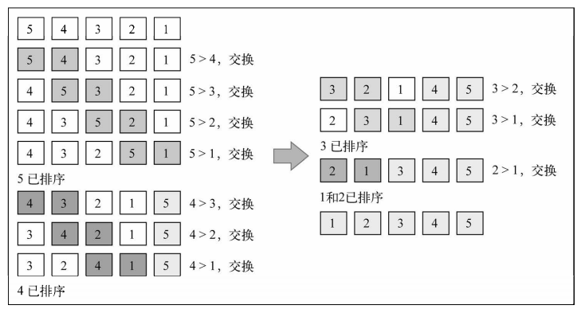
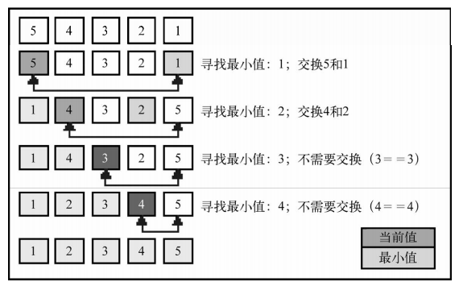
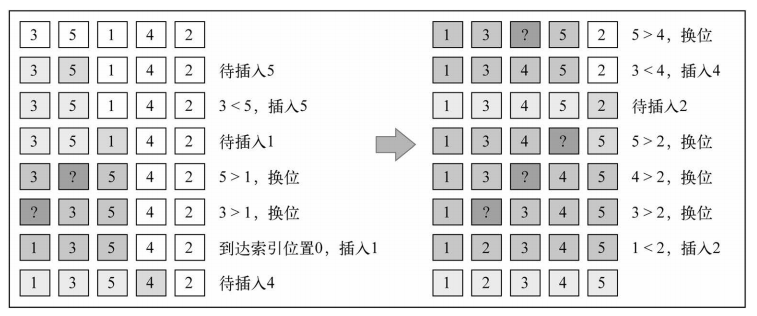
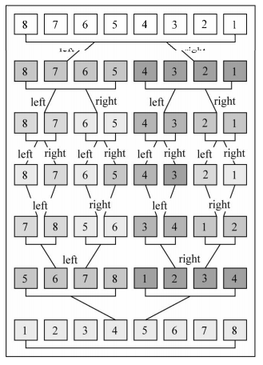
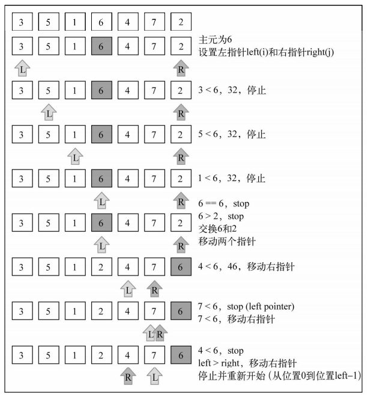
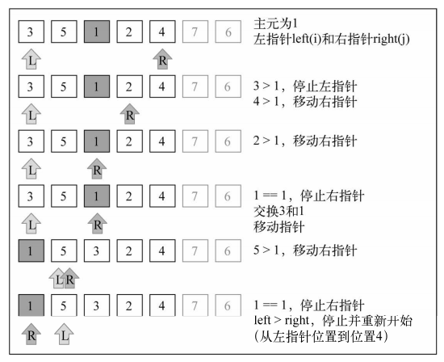
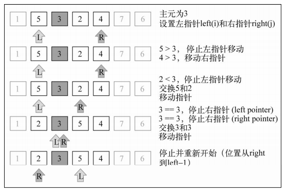
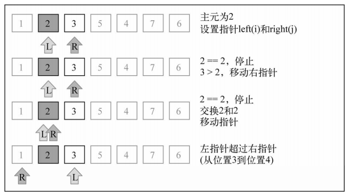
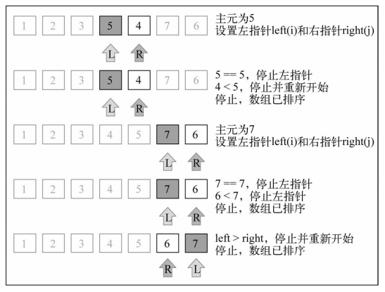

本文学习自《JavaScript数据结构与算法》，记录JavaScript 中常见的几种排序算法，包括冒泡排序，选择排序，插入排序，归并排序和快速排序。详细介绍算法思想，复杂度，算法代码以及示意图演示。
1. 冒泡排序
【算法思想】：比较任何两个相邻的项，如果第一个比第二个大，则交换它们。元素项向上移动至正确的顺序，就好像气泡升至表面一样。
【O复杂度】：O(n^2)，它在排序算法中最简单，但从运行时间的角度来看，冒泡排序是最差的。
【实现代码】：
|
|
【排序示意图】：[5, 4, 3, 2, 1]

2. 选择排序
【算法思想】：原址比较排序算法，找到数据结构中的最小值并将其放置在第一位，接着找到第二小的值并将其放在第二位，以此类推。
【O复杂度】：O(n^2)，和冒泡排序一样，它包含嵌套的两个循环，这导致了二次方的复杂度。
【实现代码】：
|
|
【排序示意图】：[5, 4, 3, 2, 1]

数组底部的箭头指示出当前迭代轮寻找最小值的数组范围，示意图中的每一步则表示外循环。
3. 插入排序
【算法思想】：每次排一个数组项，以此方式构建最后的排序数组。假定第一项已经排序了，接着，它和第二项进行比较，第二项是应该待在原位还是插到第一项之前呢？这样，头两项就已正确排序，接着和第三项比较（它是该插入到第一、第二还是第三的位置呢？），以此类推。
【O复杂度】：排序小型数组时，此算法比选择排序和冒泡排序性能要好。。
【实现代码】：
|
|
【排序示意图】：[3, 5, 1, 4, 2]

(1) 3 已被排序，所以我们从数组第二个值5开始。3比5小，所以5待在原位（数组的第二位）。3和5排序完毕。
(2) 下一个待排序和插到正确位置上去的值是1（目前在数组的第三位）。5比1大，所以5被移至第三位去了。我们得分析1是否应该被插入到第二位——1比3大吗？不，所以3被移到第二位去了。接着，我们得证明1 应该插入到数组的第一位上。因为0是第一个位置且没有负数位，所以1必须被插入到第一位。1、3、5三个数字已经排序。
(3) 4应该在当前位置（索引3 ）还是要移动到索引较低的位置上呢？4 比5 小，所以5 移动到索引3 位置上去。那么应该把4 插到索引2 的位置上去吗？4 要比3 大，所以4 插入到数组的位置3 上。
(4) 下一个待插入的数字是2 （数组的位置4）。5比2大，所以5移动至索引4。4比2 大，所以4也得移动（位置3）。3也比2大，所以3还得移动。1比2小，所以2插入到数组的第二位置上。至此，数组已排序完成。
4. 归并排序
【算法思想】：是一种分治算法。其思想是将原始数组切分成较小的数组，直到每个小数组只有一个位置，接着将小数组归并成较大的数组，直到最后只有一个排序完毕的大数组。
【O复杂度】：O(nlog^n)，归并排序性能不错。
【实现代码】：
|
|
【排序示意图】：[8, 7, 6, 5, 4, 3, 2, 1]

可以看到，算法首先将原始数组分割直至只有一个元素的子数组，然后开始归并。归并过程也会完成排序，直至原始数组完全合并并完成排序。
5. 快速排序
【算法思想】：快速排序也许是最常用的排序算法了。和归并排序一样，快速排序也使用分治的方法，将原始数组分为较小的数组（但它没有像归并排序那样将它们分割开）。
【O复杂度】：它的复杂度为O(nlog^n) ，且它的性能通常比其他的复杂度为O(nlog^n) 的排序算法要好。
【具体做法】：
(1) 首先，从数组中选择中间一项作为主元。
(2) 创建两个指针，左边一个指向数组第一个项，右边一个指向数组最后一个项。移动左指针直到我们找到一个比主元大的元素，接着，移动右指针直到找到一个比主元小的元素，然后交换它们，重复这个过程，直到左指针超过了右指针。这个过程将使得比主元小的值都排在主元之前，而比主元大的值都排在主元之后。这一步叫作划分操作。
(3) 接着，算法对划分后的小数组（较主元小的值组成的子数组，以及较主元大的值组成的子数组）重复之前的两个步骤，直至数组已完全排序。
【实现代码】：
|
|
【排序示意图】：[3, 5, 1, 6, 4, 7, 2]





注：文中图片引自《JavaScript数据结构与算法》